Note: This is a specialized workflow that applies to native excel documents exclusively. For all other document redactions, see
IPRO uses an advanced native file redaction platform with highly efficient features to perform complex redactions within excel documents. It supports point-n-click manual redaction as well automated mass redactions based on provided criteria.
|
|
Note: This is a specialized workflow that applies to native excel documents exclusively. For all other document redactions, see |
To get started, open the Document View. For detailed instructions, see
Create a search for the native documents or tag the native documents to be redacted.
|
|
Note: If you need assistance with creating your search, contact services@ipro.com. |
Provide the following to the Services team by submitting a Ticket.
Name of the excel documents saved search or the name of the tag used.
Expected document count.
Name of the user(s) they wish to have use the Redaction Tool.
After entering your URL received from Services, the Log-In Screen will appear.
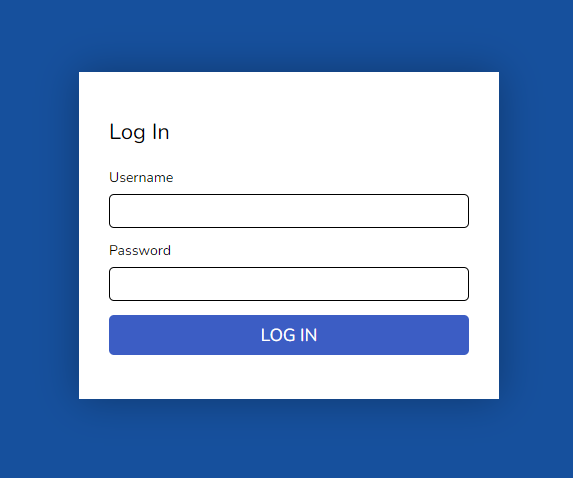
Enter your Username and Temporary Password that was provided to you. You will be prompted to create a new password.
The Casebook List window will appear.
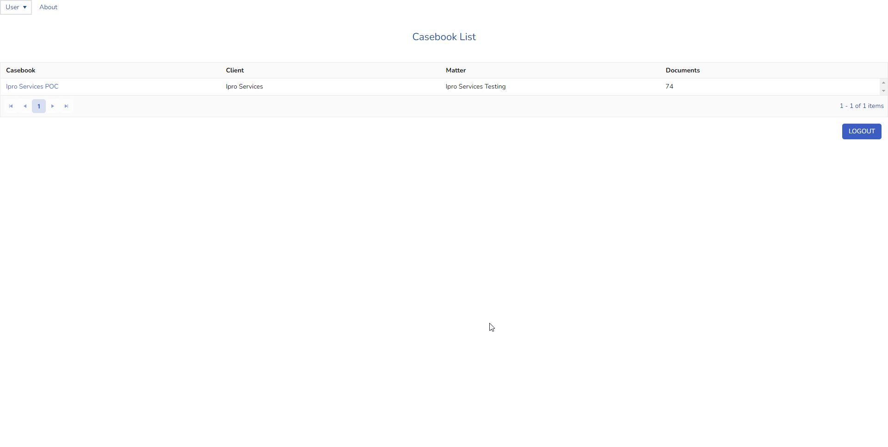
Select your Casebook. The Document Viewer window will appear.
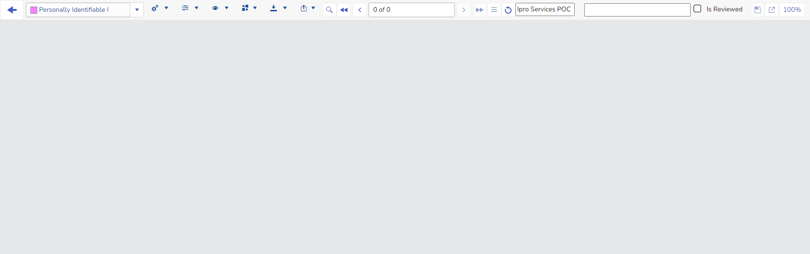
|
|
Note: When the Viewer first opens, it appears empty. You must select which document set you want to view. |
From the Toolbar, click the down arrow on the Browse Document button and select Review Set.
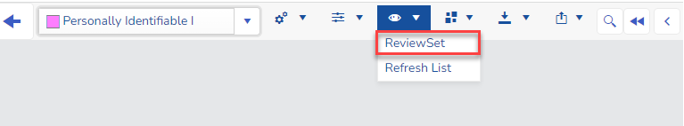
The Select Review Set window will open. Select your Review Set and click the Select Review Set button.
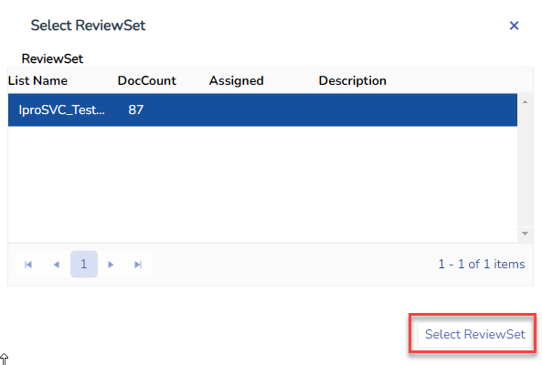
You will have an option to select All Documents or Unique Only.
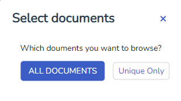
After selecting your document set, the window will display. It contains the following components:
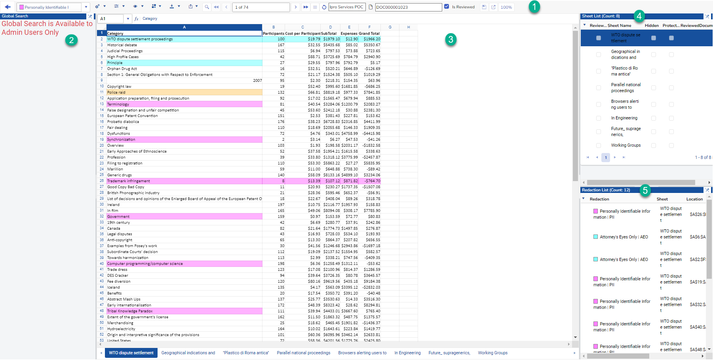
Toolbar
Contains all the options for working in the viewer window. See
Global Search Pane
Global search that pinpoints the exact location of the responsive values within the documents. The location-aware search returns which cell, comment, textbox, sheet-name, or header/footer items have the responsive values. It supports a combination of keywords, a list of values, and Regular Expressions.
The global search runs across the entire collection of the document. Any documents successfully added to Exolution are searchable in the global search.
Document Viewer
Displays the content of the native Excel file, and facilitates to apply redactions. The displayed file is the flat version of the original Excel file. It displays the redactions as highlights. The file content is displayed as read-only.
Sheet List
Lists all of the sheets in the current document. If any sheet was originally hidden or password-protected then the fields are checked. Selection change in this table reflects the selection of sheet in the Document Viewer. Likewise, the selection change in the Document Viewer changes the sheet selection in this table.
Redaction List
Displays the list of the redactions in the current document. It includes redaction type, sheet name, redaction location, a user who created the redaction, and timestamp. When a redaction is applied or removed, an entry is automatically added or removed from this table. You can jump to any redaction in the document by selecting a row in this table.
|
|
Note: The Global Search, Sheet List and Redaction List panes can be hidden or expanded by clicking in the upper right corner. |
The toolbar contains all the options for working in the viewer window.
Back Arrow
Takes you back to the Casebook list screen.
Redaction Type Selector
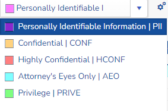
It displays a list of color-coded redaction types, each color in this list is associated with a redaction reason. The users must select a redaction type from this list in order to apply any redaction on the document.
The redaction list displays a long redaction label (e.g. “Personally Identifiable Information”), and an acronym of it (e.g. “PII”) separated by a “|”. The users have a choice to use either version of the label, or a custom label at the time of creating redacted files. The administrators can modify the redaction labels, or create additional labels using Edit Redaction Types menu.
Settings
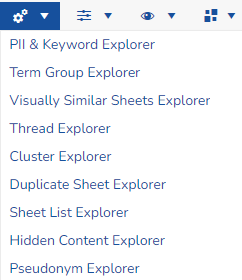
Click the down arrow to open:
PII & Keyword Explorer: It summarize PII information across all the documents.
Term Group Explorer: You can create a group of terms with multiple terms in it. It identifies each sheet with any of the terms present and displays the sheet with unique matching terms count. Double-clicking on any document from the list will open it in the Viewer.
Visually Similar Sheets Explorer:It creates groups of sheets based on the look and feel. The data may be the same or different across the sheets in a group, but the look and feel are similar. It also facilitates applying redactions on all sheets in a group in a certain area.
Thread Explorer: Excel file threading is similar to the email threading. This is when the Excel file is fully contained within another Excel file and is listed underneath of the larger Excel files.
Cluster Explorer:Excel file clustering is based on similar sheets. If two or more documents have at least one sheet that is a duplicate across them then they are placed in a cluster. Then all of the other Excel files that have at least one duplicate sheet with any of the Excel files in the cluster are also added to the cluster. The process continues until there are no more files left out of the cluster with duplicate sheets with the files in the cluster.
Duplicate Sheet Explorer: It assists in finding duplicate sheets in the document set. Redactions propagate across by default so they only need to be applied once, not separately. Results will appear in the right side pane by default.
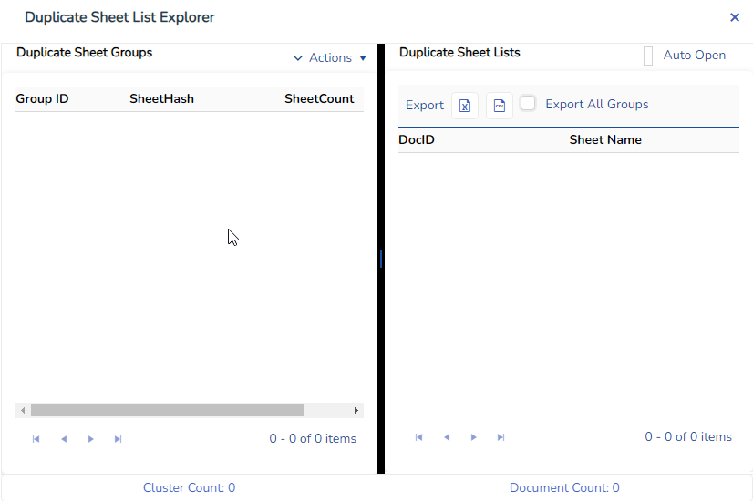
Sheet List Explorer: You can create lists of the sheets in order to make the document review more efficient. The Sheet List Explorer facilitates creating the list of the sheets and browsing them.
Hidden Content Explorer: This form lists all of the documents which have original sheets hidden and password protected. It also lists all of the documents which have data hidden by making the font color and the background color the same. Double-clicking on any document from the list will open it in the Viewer.
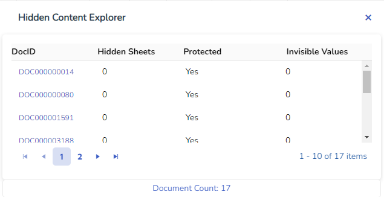
Pseudonym Explorer:
This form allows users to apply masking for each value in a value list. For example: email joe@company.com is replaced in the export process by PRSN0001 and email mark@newcompany.com will is replaced by PRSN0002 etc. This retains the entity-relationship between different values while redacting them.
Display Options
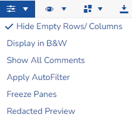
Options to toggle Hide Empty Rows/Columns, Display in Black & White, Display All Comments, Apply AutoFilters , Freeze Panes and view the Redacted Preview.
Browse Document Options
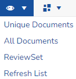
Options to select unique documents, all documents, a review set or to refresh.
Redaction Options
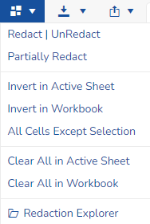
Lists all actions for redactions.
Download File Options
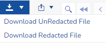
Download redacted or unredacted document and open it in Excel file compatible viewer.
Layout Options

Lists Layout options.
Find and Redact
Launches the Find and Redact window.
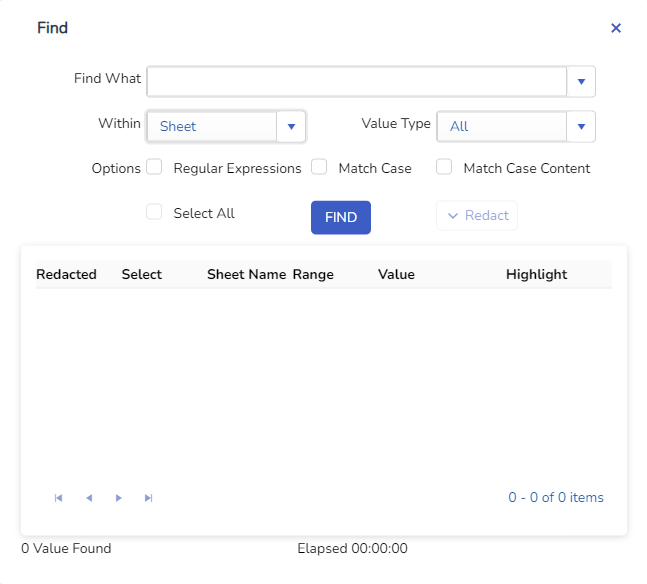
Document Navigator
Facilitates browsing the document set.
Document List
Opens the document list.
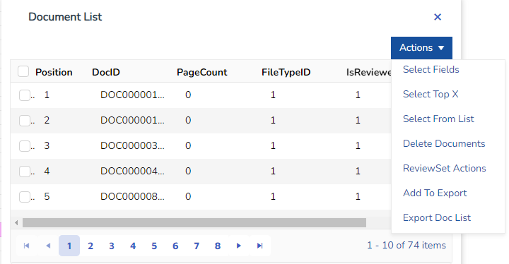
Refresh
Case List name
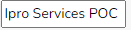
This is the name of the case currently open.
Doc ID

Displays the document unique identifier. It is read-only.
Review Status
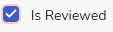
The reviewer should check this check box for every document they complete reviewing.
Zoom View
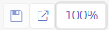
Adjusts your screen magnification.
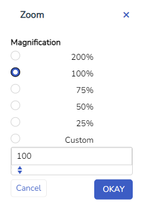
Related Topics